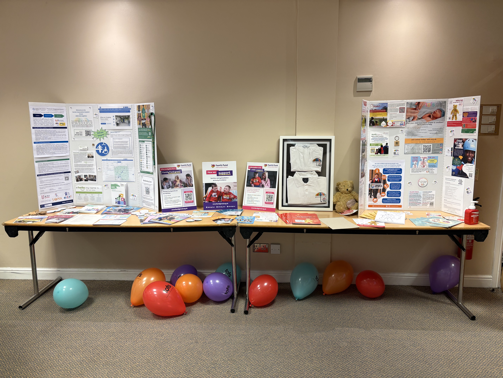
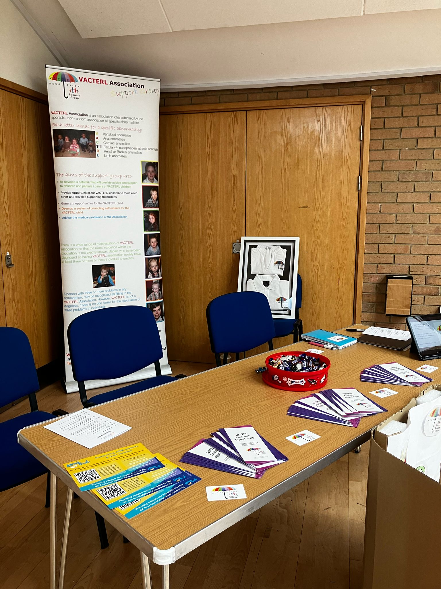
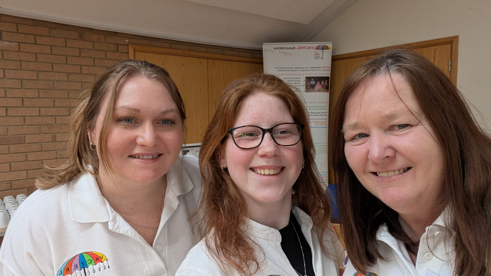
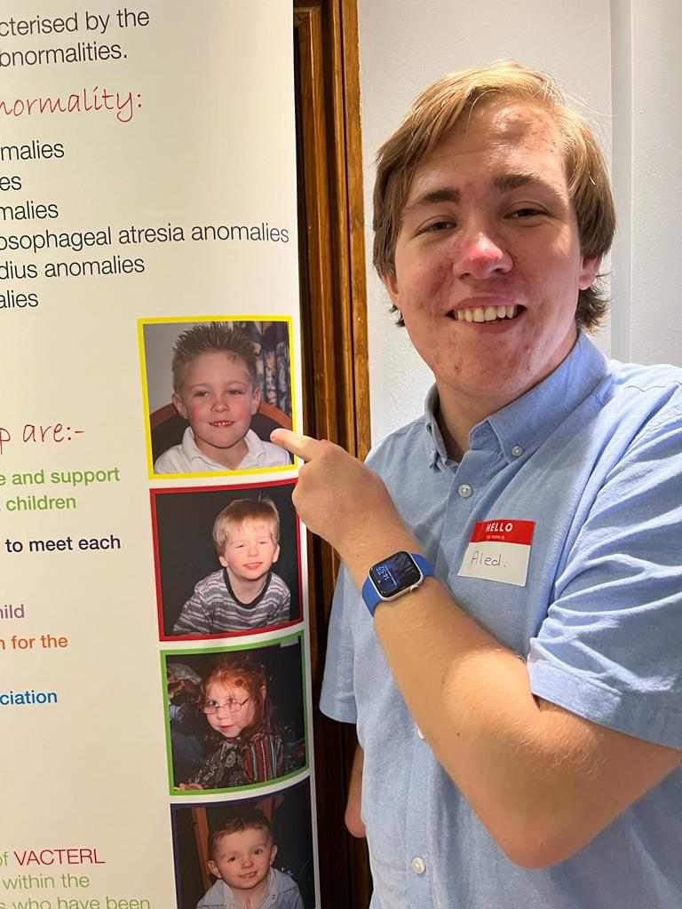
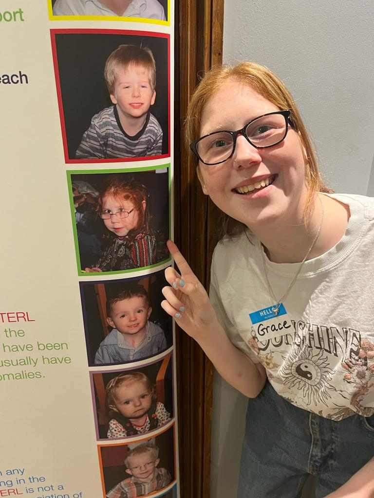
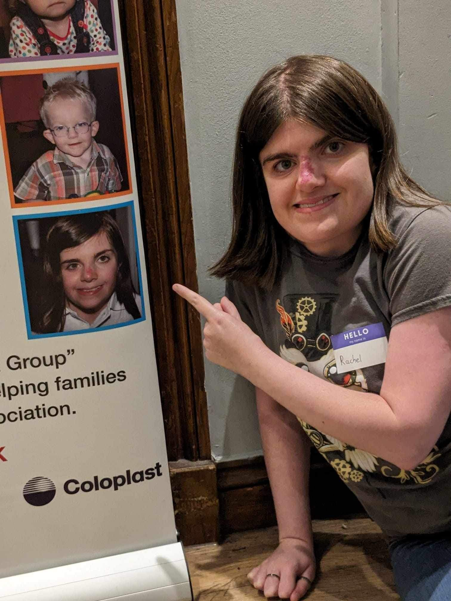

VACTERL Association Annual Gathering
Each year we hold the VACTERL Get-Together.
We’ve grown together over the years and made amazing connections. Whether you are a newly diagnosed family or an adult living with VACTERL, come and meet us.



Meet Others
Lifelong friendships for VACTERL children and teenagers, plus a welcoming peer network for parents and carers.
Learn from Experts
Talks on ARM, bowel & stoma care, continence, the Adult OA/TOF Management Handbook, and our medical trauma appointment card.
From Isolation to Advocacy
Co-producing patient empowerment guidance with TOFS, Max's Trust, VACTERL Visionaries, and ERN eUROGEN across Europe and the globe.
Growing Up Together: Banner "Then & Now"
Young adults in our community pointing back at their childhood photographs on the VACTERL Association pop-up banner:



Community Films
Who We Are — Short Film
Meet the families, children, and committee behind the VACTERL Association Support Group and hear how we have grown together over the years.
VACTERL Get-Together 2025
Highlights from our 2025 annual gathering — family connections, clinical sessions, and community stories.
Collaborations & Signposting
TOFS & Adult TOF Working Group · Max's Trust (ARM Community) · VACTERL Visionaries · ERN eUROGEN · Family Fund · IPSEA · PINNT · Over The Wall Camp · SOMA · EAT · ORCHID · Birmingham Children’s Hospital.